Cross blended Hypsometric Tints fill scales
Source:R/scales_fill_cross_blended.R
scale_fill_cross_blended.RdImplementation of the cross blended hypsometric gradients presented on doi:10.14714/CP69.20 . The following fill scales and palettes are provided:
scale_fill_cross_blended_d(): For discrete values.scale_fill_cross_blended_c(): For continuous values.scale_fill_cross_blended_b(): For binning continuous values.cross_blended.colors(): A gradient color palette. See alsogrDevices::terrain.colors()for details.
An additional set of scales is provided. These scales can act as hypsometric (or bathymetric) tints.
scale_fill_cross_blended_tint_d(): For discrete values.scale_fill_cross_blended_tint_c(): For continuous values.scale_fill_cross_blended_tint_b(): For binning continuous values.cross_blended.colors2(): A gradient color palette. See alsogrDevices::terrain.colors()for details.
See Details.
Usage
scale_fill_cross_blended_d(
palette = "cold_humid",
...,
alpha = 1,
direction = 1
)
scale_fill_cross_blended_c(
palette = "cold_humid",
...,
alpha = 1,
direction = 1,
na.value = NA,
guide = "colourbar"
)
scale_fill_cross_blended_b(
palette = "cold_humid",
...,
alpha = 1,
direction = 1,
na.value = NA,
guide = "coloursteps"
)
cross_blended.colors(n, palette = "cold_humid", alpha = 1, rev = FALSE)
scale_fill_cross_blended_tint_d(
palette = "cold_humid",
...,
alpha = 1,
direction = 1
)
scale_fill_cross_blended_tint_c(
palette = "cold_humid",
...,
alpha = 1,
direction = 1,
values = NULL,
limits = NULL,
na.value = NA,
guide = "colourbar"
)
scale_fill_cross_blended_tint_b(
palette = "cold_humid",
...,
alpha = 1,
direction = 1,
values = NULL,
limits = NULL,
na.value = NA,
guide = "coloursteps"
)
cross_blended.colors2(n, palette = "cold_humid", alpha = 1, rev = FALSE)Source
Patterson, T., & Jenny, B. (2011). The Development and Rationale of Cross-blended Hypsometric Tints. Cartographic Perspectives, (69), 31 - 46. doi:10.14714/CP69.20 .
Patterson, T. (2004). Using Cross-blended Hypsometric Tints for Generalized Environmental Mapping. Accessed June 10, 2022. http://www.shadedrelief.com/hypso/hypso.html
Arguments
- palette
A valid palette name. The name is matched to the list of available palettes, ignoring upper vs. lower case. See cross_blended_hypsometric_tints_db for more info. Values available are:
"arid","cold_humid","polar","warm_humid".- ...
Other arguments passed on to
discrete_scale(),continuous_scale(), or binned_scale to control name, limits, breaks, labels and so forth.- alpha
The alpha transparency, a number in [0,1], see argument alpha in
hsv.- direction
Sets the order of colors in the scale. If 1, the default, colors are ordered from darkest to lightest. If -1, the order of colors is reversed.
- na.value
Missing values will be replaced with this value.
- guide
A function used to create a guide or its name. See
guides()for more information.- n
the number of colors (\(\ge 1\)) to be in the palette.
- rev
logical indicating whether the ordering of the colors should be reversed.
- values
if colours should not be evenly positioned along the gradient this vector gives the position (between 0 and 1) for each colour in the
coloursvector. Seerescale()for a convenience function to map an arbitrary range to between 0 and 1.- limits
One of:
NULLto use the default scale rangeA numeric vector of length two providing limits of the scale. Use
NAto refer to the existing minimum or maximumA function that accepts the existing (automatic) limits and returns new limits. Also accepts rlang lambda function notation. Note that setting limits on positional scales will remove data outside of the limits. If the purpose is to zoom, use the limit argument in the coordinate system (see
coord_cartesian()).
Details
On scale_fill_cross_blended_tint_* palettes, the position of the gradients
and the limits of the palette are redefined. Instead of treating the color
palette as a continuous gradient, they are rescaled to act as a hypsometric
tint. A rough description of these tints are:
Blue colors: Negative values.
Green colors: 0 to 1.000 values.
Browns: 1000 to 4.000 values.
Whites: Values higher than 4.000.
The following orientation would vary depending on the palette definition (see cross_blended_hypsometric_tints_db for an example on how this could be achieved).
Note that the setup of the palette may not be always suitable for your
specific data. For example, raster of small parts of the globe (and with a
limited range of elevations) may not be well represented. As an example, a
raster with a range of values on [100, 200] would appear almost as an
uniform color.
This could be adjusted using the limits/values provided by ggplot2.
cross_blended.colors2() provides a gradient color palette where the
distance between colors is different depending of the type of color.
In contrast, cross_blended.colors() provides an uniform gradient across
colors. See Examples.
See also
cross_blended_hypsometric_tints_db, terra::plot(),
terra::minmax(), ggplot2::scale_fill_viridis_c()
Other gradient scales and palettes for hypsometry:
scale_fill_hypso,
scale_fill_terrain,
scale_fill_whitebox,
scale_fill_wiki
Examples
# \donttest{
filepath <- system.file("extdata/volcano2.tif", package = "tidyterra")
library(terra)
volcano2_rast <- rast(filepath)
# Palette
plot(volcano2_rast, col = cross_blended.colors(100, palette = "arid"))
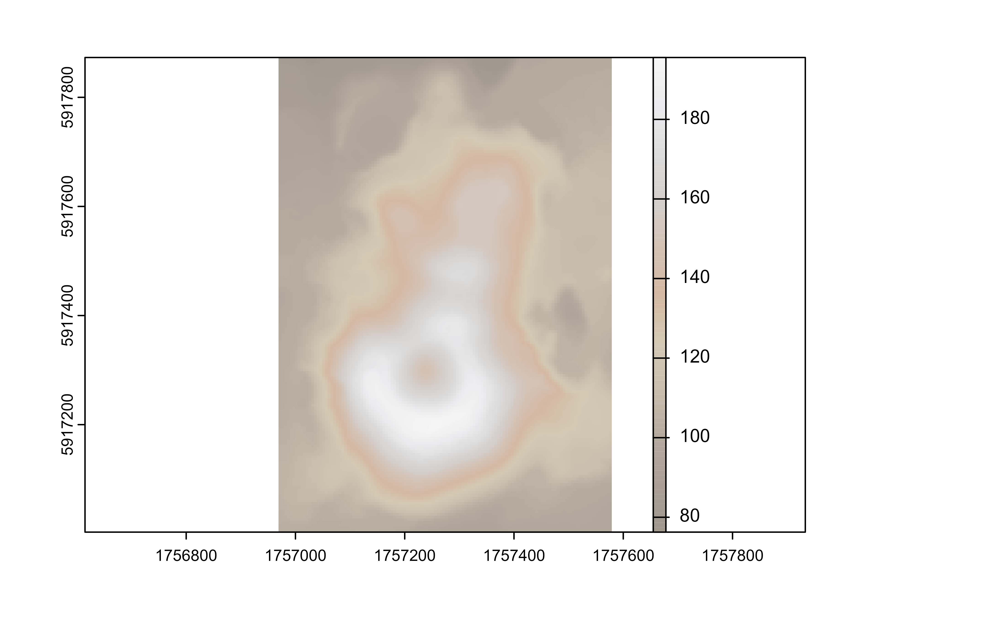
# Palette with uneven colors
plot(volcano2_rast, col = cross_blended.colors2(100, palette = "arid"))
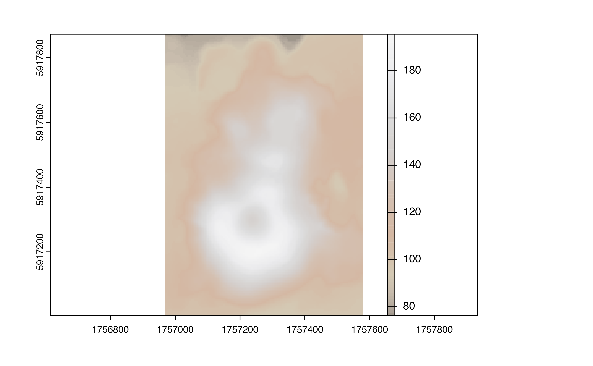
library(ggplot2)
ggplot() +
geom_spatraster(data = volcano2_rast) +
scale_fill_cross_blended_c(palette = "cold_humid")
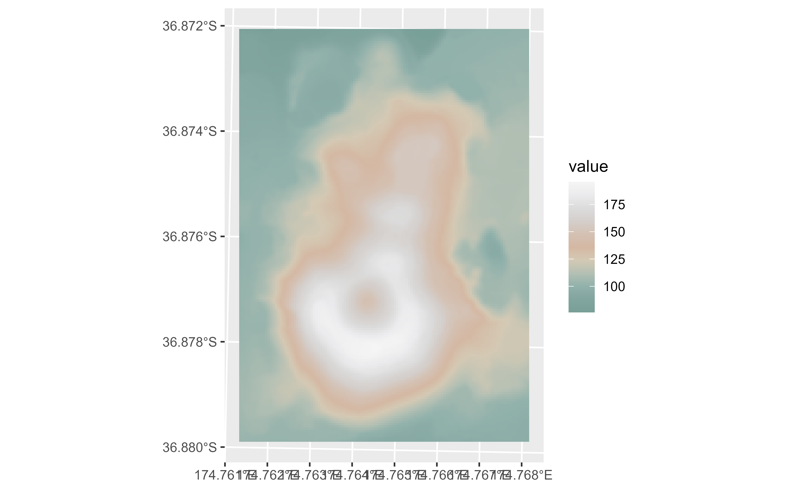
# Use hypsometric tint version...
ggplot() +
geom_spatraster(data = volcano2_rast) +
scale_fill_cross_blended_tint_c(palette = "cold_humid")
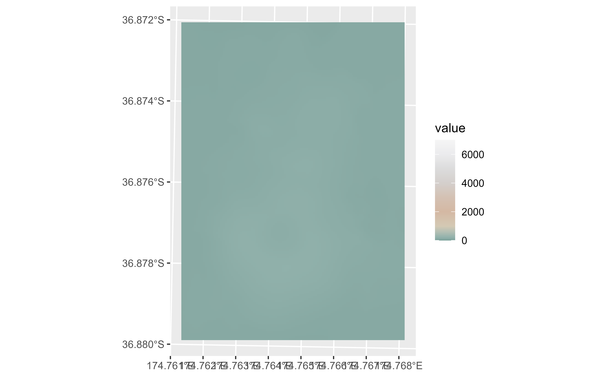
# ...but not suitable for the range of the raster: adjust
my_lims <- minmax(volcano2_rast) %>% as.integer() + c(-2, 2)
ggplot() +
geom_spatraster(data = volcano2_rast) +
scale_fill_cross_blended_tint_c(
palette = "cold_humid",
limits = my_lims
)
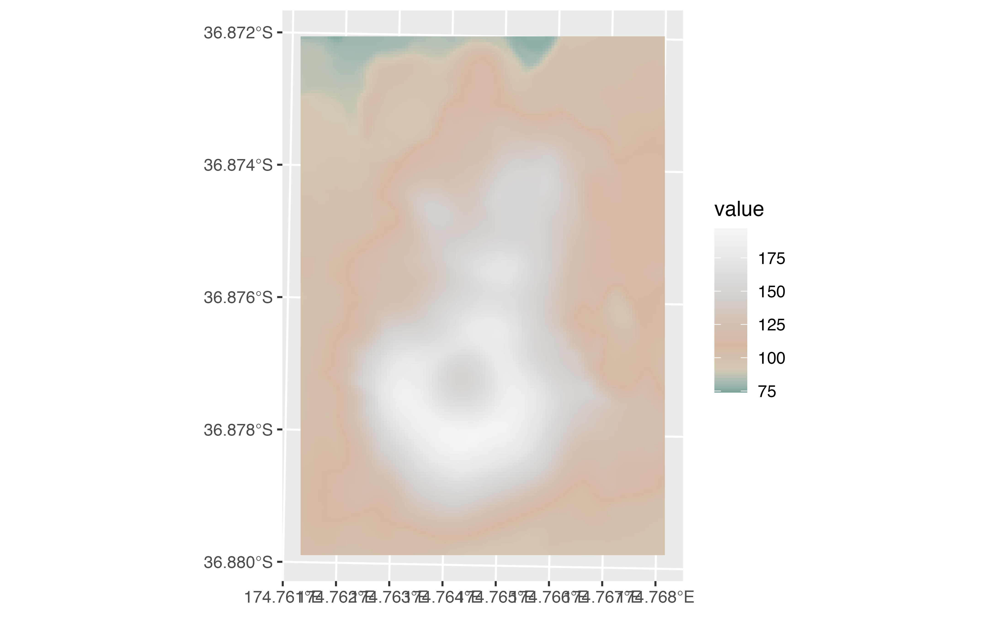
# Full map with true tints
f_asia <- system.file("extdata/asia.tif", package = "tidyterra")
asia <- rast(f_asia)
ggplot() +
geom_spatraster(data = asia) +
scale_fill_cross_blended_tint_c(
palette = "warm_humid",
labels = scales::label_number(),
breaks = c(-10000, 0, 5000, 8000),
guide = guide_colorbar(
direction = "horizontal",
title.position = "top",
barwidth = 25
)
) +
labs(fill = "elevation (m)") +
theme_minimal() +
theme(legend.position = "bottom")
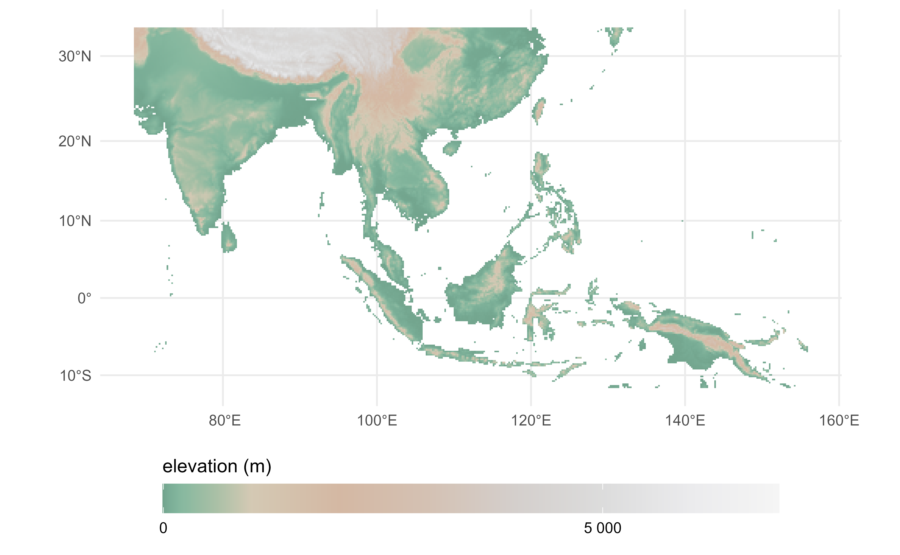
# Binned
ggplot() +
geom_spatraster(data = volcano2_rast) +
scale_fill_cross_blended_b(breaks = seq(70, 200, 25), palette = "arid")
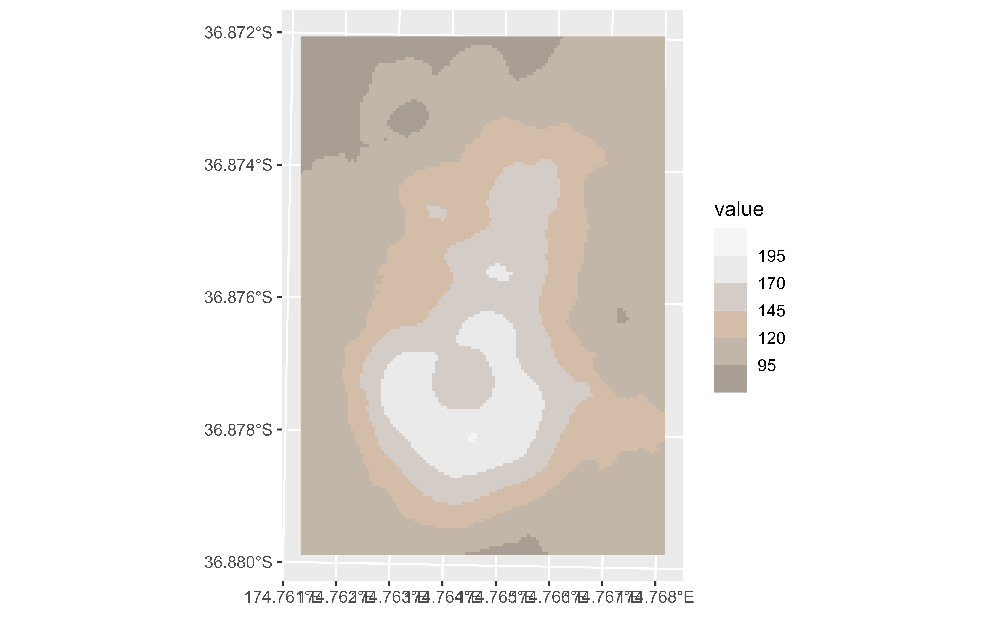
# With limits and breaks
ggplot() +
geom_spatraster(data = volcano2_rast) +
scale_fill_cross_blended_tint_b(
breaks = seq(75, 200, 25),
palette = "arid",
limits = my_lims
)
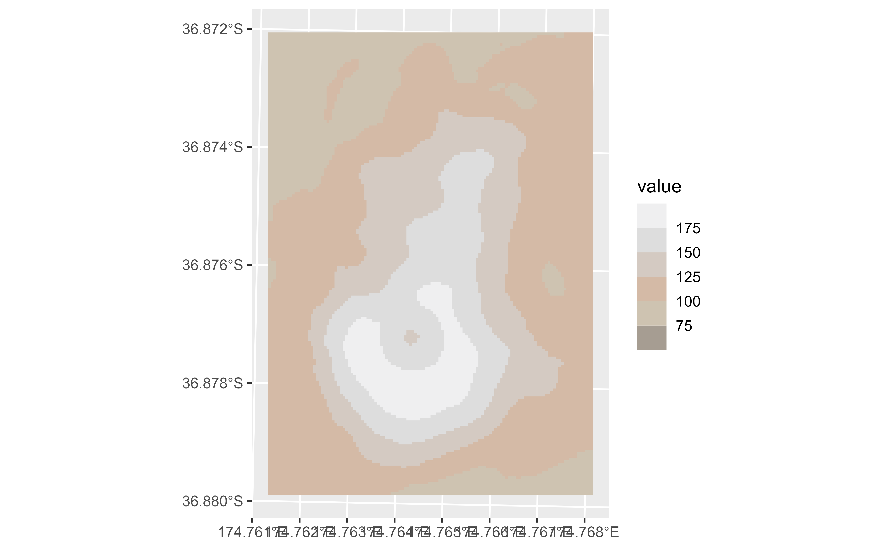
# With discrete values
factor <- volcano2_rast %>%
mutate(cats = cut(elevation,
breaks = c(100, 120, 130, 150, 170, 200),
labels = c(
"Very Low", "Low", "Average", "High",
"Very High"
)
))
ggplot() +
geom_spatraster(data = factor, aes(fill = cats)) +
scale_fill_cross_blended_d(na.value = "gray10", palette = "cold_humid")
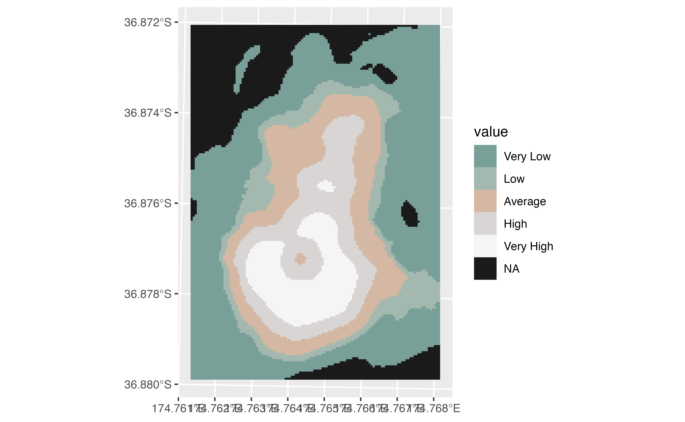
# Tint version
ggplot() +
geom_spatraster(data = factor, aes(fill = cats)) +
scale_fill_cross_blended_tint_d(
na.value = "gray10",
palette = "cold_humid"
)
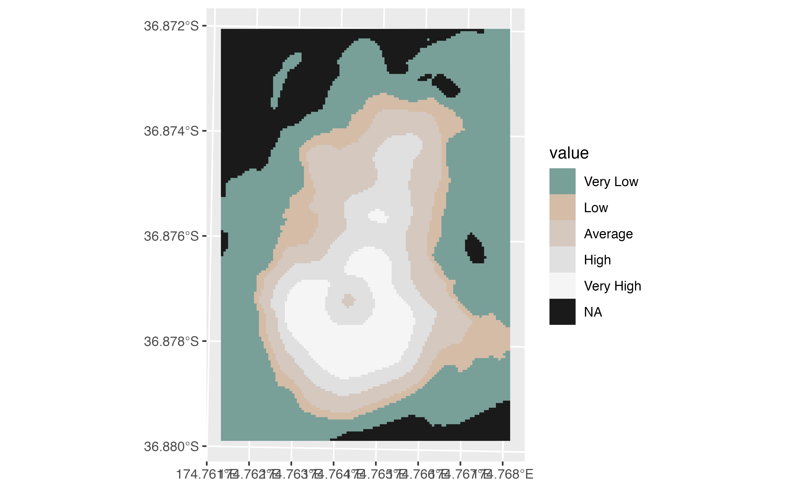
# }
# Display all the cross-blended palettes
pals <- unique(cross_blended_hypsometric_tints_db$pal)
# Helper fun for plotting
ncols <- 128
rowcol <- grDevices::n2mfrow(length(pals))
opar <- par(no.readonly = TRUE)
par(mfrow = rowcol, mar = rep(1, 4))
for (i in pals) {
image(
x = seq(1, ncols), y = 1, z = as.matrix(seq(1, ncols)),
col = cross_blended.colors(ncols, i), main = i,
ylab = "", xaxt = "n", yaxt = "n", bty = "n"
)
}
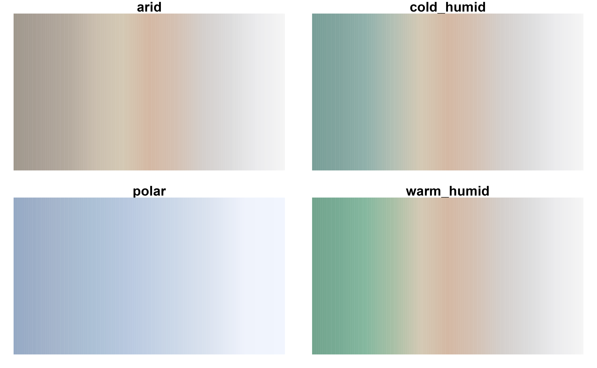
par(opar)
# Display all the cross-blended palettes on version 2
pals <- unique(cross_blended_hypsometric_tints_db$pal)
# Helper fun for plotting
ncols <- 128
rowcol <- grDevices::n2mfrow(length(pals))
opar <- par(no.readonly = TRUE)
par(mfrow = rowcol, mar = rep(1, 4))
for (i in pals) {
image(
x = seq(1, ncols), y = 1, z = as.matrix(seq(1, ncols)),
col = cross_blended.colors2(ncols, i), main = i,
ylab = "", xaxt = "n", yaxt = "n", bty = "n"
)
}
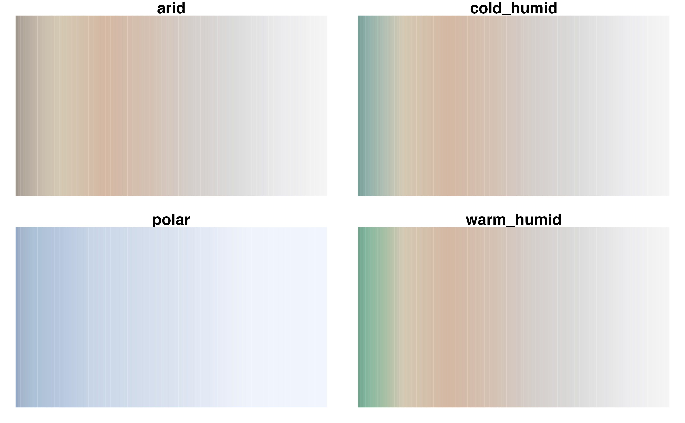
par(opar)